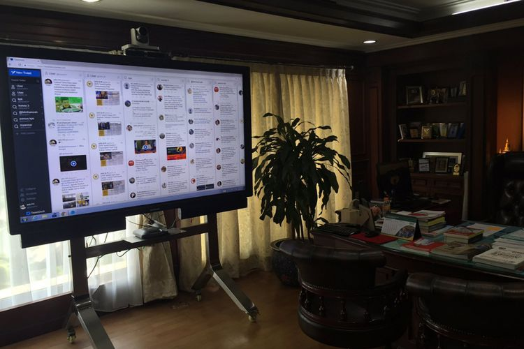

Layar Jumbo Pemantau Twitter di Ruangan Fahri Hamzah Jadi Guyonan Netizen
OIK YUSUF
KabarKabur.com - 23/09/2017, 15:30 WIB

“Di ruang kerja Fahri Hamzah. Ada layar Twitter segede ini,” begitu tulis akun Twitter Pangeran Siahaan dalam kicauannya,
disertai foto yang menampakkan layar monitor berukuran raksasa dalam sebuah ruangan.
Di layar monitor tampak aplikasi Tweetdeck sedang terbuka dan menampilkan feed dari aneka macam akun Twitter yang diikuti Fahri dalam beberapa kolom.
Tweet yang diunggah pada Jumat (22/9/2017) itu ternyata memicu reaksi dari netizen. Sebagian mempertanyakan aspek apa manfaat monitor tersebut dalam menunjang kinerja Fahri sebagai Wakil Ketua DPR.
“Pantas nge-tweet melulu, kerjanya kapan? TV segede itu yang beliin rakyat kan?” kicau seorang pengguna Twitter bernama @GunForKid2. “Digaji rakyat cuma buat maen socmed,” tulis pengguna lain di handle @santihand08.
Sebagian warganet lain memilih berguyon lewat cara kreatif. Ada yang memakai software pengolah foto untuk mengubah tampilan monitor yang ada di ruangan Fahri, seolah-olah dia sedang bermain game Winning Eleven di PlayStation atau menonton video YouTube.
Sebagian netizen lain menyikapi lebih positif dengan mengatakan bahwa Fahri memang mungkin perlu memantau Twitter dalam menjalankan tugasnya di rumah wakil rakyat.
“Hahaha, Tapi wajar saja menurut saya. Beliau kan wakil DPR, wajib mendengar aspirasi masyarakat, tidak terkecuali dari Twitter,” kicau seorang pengguna Twitter bernama @admadinidzar.
Monitor ratusan juta?
Besarnya ukuran monitor di ruangan Fahri Hamzah tak urung menggelitik rasa penasaran. Kompas.com coba menelusuri merek dan tipe perangkat yang bersangkutan di internet.
Berdasarkan hasil foto perangkat dari akun milik Pangeran Siahaan di Twitter, Kompas.com melakukan penelusuran. Dari hasil googling, ditemukan kemungkinan bahwa monitor jumbo tersebut adalah Mondopad Ultra 85-inch with 4K buatan Infocus.
Jika benar, perangkat dengan layar touchscreen berukuran 85 inci dan prosesor Intel Core i7 ini sanggup berfungsi sebagai komputer, papan tulis digital, dan sarana video conferencing untuk rapat jarak jauh.
“Mondopad adalah sistem kolaborasi touch-screen all-in-one untuk kolaborasi tatap muka yang efisien dengan orang lain di mana pun,” tulis inFocus dalam laman penjelasan produk tentang Mondopad Ultra 85-inch.
Versi terbaru dari Mondopad Ultra 85-inch yang berbasis Windows 10 (dari gambar, milik Fahri agaknya menjalankan Windows 7) dipasarkan seharga 18.500 dollar AS atau hampir Rp 250 juta lewat pemesanan langsung dari situs Infocus.
Monitor di ruangan yang milik Fahri juga ditambahi kamera video conference Infocus dengan harga per unit 1.999 dollar AS atau lebih dari Rp 26 juta per unit.
Sekali lagi, merek dan harga perangkat monitor yang ada di ruang kerja anggota DPR tersebut belum terkonfirmasi kebenarannya.
Kompas.com sudah menghubungi Fahri perihal monitor tersebut. Ia mengungkapkan bahwa perangkat tersebut bukan miliknya, tetapi fasilitas dari DPR.
"Itu bukan punya saya," kata Fahri. Ia juga enggan menyebutkan merek dari monitor tersebut.
Menurut pengamatan Kompas.com, fasilitas layar itu tidak hanya hadir di ruangan kerja Fahri saja. Di ruangan pimpinan DPR, baik Ketua hingga Wakil Ketua, terdapat satu unit layar jumbo ini.
penulis :Oik Yusuf
Editor :Deliusno